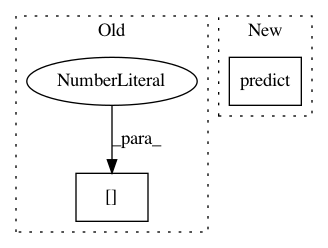

f0b8fba7700a5e2a56b0d57af696118865e4b009,chainercv/extensions/detection/detection_vis_report.py,DetectionVisReport,__call__,#DetectionVisReport#Any#,209
Before Change
inputs = self.dataset[idx]
self._check_type_dataset(inputs)
pred_bbox, pred_label = forward(self.target, inputs[0],
forward_func=self.predict_func,
expand_dim=True)
if pred_bbox.ndim == 2:
After Change
out_file = osp.join(trainer.out, out_file)
img, gt_bbox, gt_label = self.dataset[idx]
pred_bbox, pred_label, pred_score = self.target.predict(img)
// start visualizing using matplotlib
fig = plot.figure()
In pattern: SUPERPATTERN
Frequency: 4
Non-data size: 2
Instances
Project Name: chainer/chainercv
Commit Name: f0b8fba7700a5e2a56b0d57af696118865e4b009
Time: 2017-05-04
Author: Hakuyume@users.noreply.github.com
File Name: chainercv/extensions/detection/detection_vis_report.py
Class Name: DetectionVisReport
Method Name: __call__
Project Name: ClimbsRocks/auto_ml
Commit Name: 3f74cd386abdc18a4b0b48160686f9654fb22bc1
Time: 2016-12-01
Author: ClimbsBytes@gmail.com
File Name: auto_ml/utils_model_training.py
Class Name: FinalModelATC
Method Name: predict_proba
Project Name: lene/nn-wtf
Commit Name: 4065c4b2cc1ebe2eeb829e8ff3f620a4f510b096
Time: 2016-02-26
Author: lene.preuss@gmail.com
File Name: nn_wtf/neural_network_graph.py
Class Name: NeuralNetworkGraph
Method Name: predict
Project Name: keras-team/keras
Commit Name: 88d523e01b68a87298d14dac1d2cee864bf5a22a
Time: 2016-05-26
Author: francois.chollet@gmail.com
File Name: tests/keras/layers/test_normalization.py
Class Name:
Method Name: test_batchnorm_mode_0_convnet